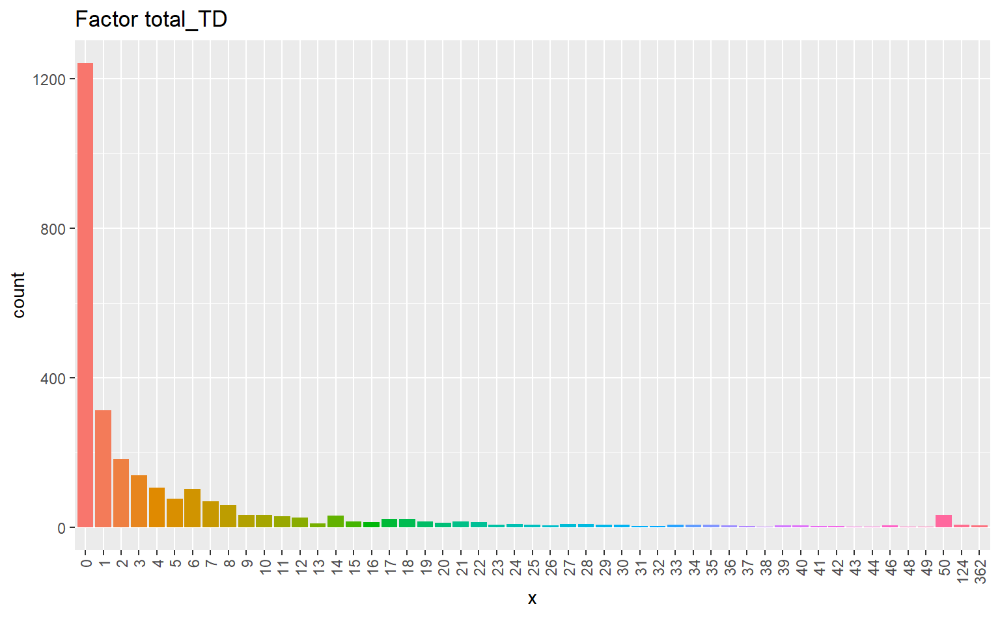
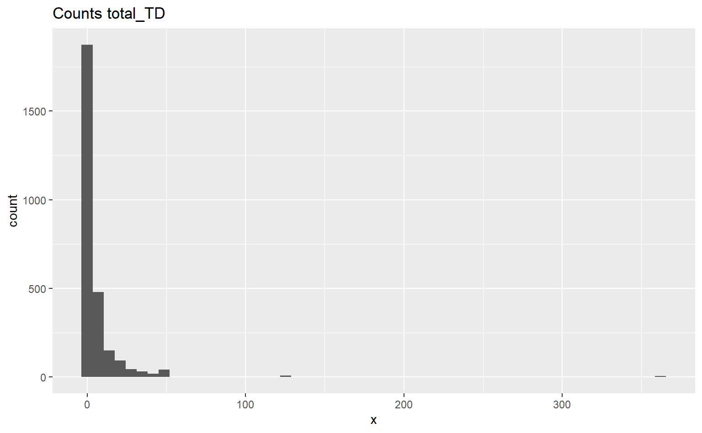
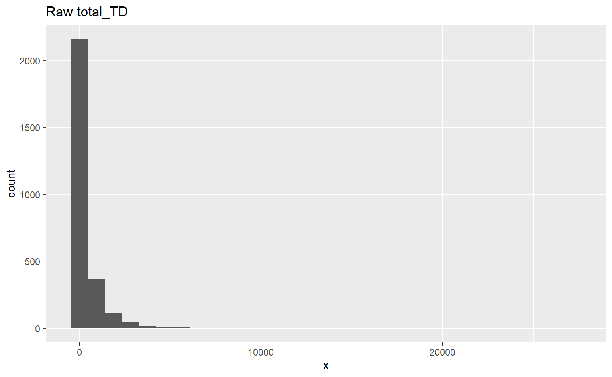

The largest count in North Cascades is 328 seedlings for a single species and 362 of all species on a subplot.
# i <- 1for (i in30:length(td_names)) { t <- y_resp |>select(td_names[i]) t <- t |>rename(x = td_names[i]) p3 <- t |>ggplot() +aes(x = x) +geom_histogram(# y = after_stat(count), bins =30 ) +labs(title =str_c("Raw ", td_names[i])) t <- y_resp_factors |>select(td_names[i]) t <- t |>rename(x = td_names[i]) p <- t |>ggplot() +aes(x = x, fill = x) +geom_bar(# y = after_stat(count) ) +labs(title =str_c("Factor ", td_names[i])) +scale_x_discrete(guide =guide_axis(angle =90)) +theme(legend.position="none") t <- y_resp_counts_grouped |>select(td_names[i]) t <- t |>rename(x = td_names[i]) p2 <- t |>ggplot() +aes(x = x) +geom_histogram(# y = after_stat(count), bins =53 ) +labs(title =str_c("Counts ", td_names[i]))print(p)print(p2)print(p3) }



y_resp_factors$total_TD |>n_distinct()
[1] 51
Empty Classes
# This is the code for emply classes from randomForests adjusted to check my variables.nclass <-length(levels(y$max_spp1))## Check for empty classes:if (any(table(y) ==0)) {print("Can't have empty classes in y.")}
So, this variable is not empty without bootstrap = T. However, it is when I run yaImpute with bootstrap.
y_resp_factors$max_spp1 |>n_distinct()
[1] 27
y_resp_factors$max_spp2 |>n_distinct()
[1] 26
27 classes in max 1 and 26 in max 2.
# n1 <- 2n2 <-5empty <-tribble(~run, ~good, ~var, ~n1, ~n2)for (n in5:15) {for (num in3:8) {n1 <- numn2 <- n# Prepy <- y_resp_factorsy <- y |>filter(total_TD !=0)CNs <- y |>select(STANDPLOT_CN)y <- y %>%select_if(~!is.numeric(.) ||sum(.) !=0)# Y variablest <- y |>group_by(max_spp1) |>summarise(n =n(),tpa =sum(largest_1) ) |>arrange(n)td_remove <- t[1:n1,]$max_spp1 |>as.character()y_rare <- y |>select(all_of(td_remove))y_rare <- y_rare |>select(all_of(names(y_rare))) |>mutate_if(is.factor, as.character) |>mutate_if(is.character, as.numeric) y_rare <- y_rare |>mutate(rare_TD =rowSums(y_rare[grep("_TD", names(y_rare))]))y$rare_TD <-factor(y_rare$rare_TD)y <- y |>select(!all_of(td_remove))spp2_list <- y |>group_by(max_spp2) |>summarise(n =n()) |>arrange(n)# n2 <- nrow(spp2_list) - n2spp2_list2 <- spp2_list$max_spp2[1:n2] |>as.character()y <- y |>mutate(max_spp1 =ifelse( max_spp1 %in% td_remove, "rare1", max_spp1 ),max_spp2 =ifelse( max_spp2 %in% spp2_list2, "rare2", max_spp2 ))y <- y |>mutate(max_spp1 =factor(max_spp1),max_spp2 =factor(max_spp2) )y <- y |>select(-c(largest_1, largest_2))y <-as.data.frame(y)y <- y |>column_to_rownames("STANDPLOT_CN")y <-droplevels(y)y <- y |>select(max_spp1, max_spp2)y_vars <-names(y)# empty <- tribble(~run, ~good, ~var)for (v in1:length(y_vars)) { t <- y_vars[v]for (i in1:25) { a <-sample(x = y[,v], size =nrow(y)/3,replace = T)# print(table(a))if (any(table(a) ==0)) {# print(str_c(i, " Can't have empty classes in y.")) x = F } else {# print(str_c(i, " NO empty classes in y.")) x = T } z <-data.frame(run = i, good = x, var = t, n1 = num, n2 = n) empty <-add_row(empty, z)}}}}t <- empty |>group_by(n1, n2) |>summarise(prop_run =mean(good), .groups ="drop") |>arrange(n1, desc(prop_run))t |>filter(n1 ==4) |>filter(prop_run > .2) |>arrange(desc(prop_run))
n1
n2
prop_run
4
11
0.64
4
14
0.58
4
15
0.58
4
10
0.56
4
12
0.56
4
13
0.52
4
8
0.44
4
9
0.40
4
7
0.38
4
6
0.22
I was testing which variables would run, then I made the Empty classes section and showed an example above. I ran it on all of the variables to see how often they would run as well.
In a group of 1000 tests, Max species 1 & 2 could run in yaImpute about 33% of the time with 5 species grouped into rare and I forgot how many in max 2, about 9. PISI could run about 27% of the time as a factor without adjusting the counts. All other variables would run less than 1% of the time.
RF factors
03Sept24
I am not sure that it will work out to run it with factors for counts. It can be done, but I would need to run each species through the natural breaks algorithm to set the rarer counts into groups.
However, I did learn how to run yaImpute with regression for the y variables. In the test case, the best variables were around 70% variation explained. The worst had negative single digits.
I experimented with ntree and mtry. More trees is better, I can’t remember what mtry did. It was a little different.
I did not learn how to set the proportion sampled in the bootstrap, but that would let us use more of the data.
In my experiments, I learned that as factors only pipo could be run effectively. It succeeded in passing the classes hurdle about 25% of the time. Running as regression still allows for classes and changes the error to % variation explained.
I was not able to replicate the % variation explained. On its face, it sounds like r squared, but I couldn’t get it to match up with the output data. There could be some internal rules for degrees of freedom in RF. I could check the source code for RF and yaImpute to see if I can find it.
I did not get around to trying RF with species groups. Doing species groups and running with regression seems like the best bet right now. We still won’t get good numbers for some of the data, but perhaps with the hyper parameters, I could fix that.
rf_yai <-yai(x = x, y = y, method ="randomForest", k =1, bootstrap = F, rfMode ="regression", ntree =c(100, rep(10, 29)))t5 <- rf_yai |>yaiRFsummary()t4$forestAttributest5$forestAttributes
rf_yai <-yai(x = x, y = y, method ="randomForest", k =1, bootstrap = F, rfMode ="regression", ntree =c(1000, rep(10, 29)))t6 <- rf_yai |>yaiRFsummary()t5$forestAttributest6$forestAttributes
100 trees for pipo made about 17% of the error explained. 1000 trees made about 18%.
mtry
rf_yai <-yai(x = x, y = y, method ="randomForest", k =1, bootstrap = F, rfMode ="regression", ntree =c(1000, rep(10, 29)), mtry =2 )t7 <- rf_yai |>yaiRFsummary()rf_yai <-yai(x = x, y = y, method ="randomForest", k =1, bootstrap = F, rfMode ="regression", ntree =c(1000, rep(10, 29)), mtry =20 )t8 <- rf_yai |>yaiRFsummary()t6$forestAttributest7$forestAttributest8$forestAttributes
The response has five or fewer unique values. Are you sure you want to do regression? Warning in randomForest.default(x = xRefs[, xN, FALSE], y = yone, proximity = FALSE, :
That error pops up for all RFs where that case exists, not just this one.
mtry of 2 was about 13% and at 20 it was about 18%. Default is about 6, sqrt of nrows or ncols.